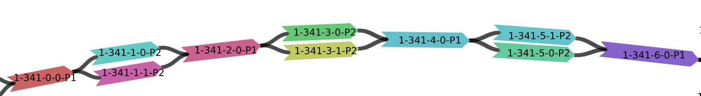

Shasta Mode 3 assembly
Summary
- Uses new computational techniques to extract phased sequence from the marker graph.
- Preliminary version released with Shasta 0.12.0, despite known issues, to encourage experimentation. Please share your experiences by filing issues on the Shasta GitHub repository.
- Initially only supported for the new high accuracy Oxford Nanopore reads from the 2023.12 data release. It is possible that additional future releases will also support ONT R10 reads.
- Despite the known issues, it produces useful phased assemblies. See this presentation for an analysis of assembly results.
- Released with minimal usage documentation (this page). A description of computational techniques is not yet available.
- Invoke using
--config Nanopore-ncm23-May2024. This assembly configuration was only tested on human genomes at coverage 40x to 60x, but may be functional at higher or lower coverage, within reasonable limits. It includes limited adaptivity to coverage.
Output files
Shasta uses GFA terminology. A contiguous piece of assembled sequence is a Segment. Links define adjacency between segments.
Assembly.gfa
| The assembly graph in GFA 1.0 format. All link records include a Cigar string defining an exact overlap of a small but variable number of bases between adjacent segments. |
Assembly-NoSequence.gfa
| Identical to Assembly.gfa, but does not contain any sequence.
Faster to download, manipulate, and visualize in
Bandage.
|
Assembly.fasta
| The sequences of all assembled segments, in FASTA format. |
Assembly.csv
| Contains one line of information for each assembled segment. It can be loaded in Bandage and also provides custom coloring of segments. |
Naming of assembled segments
Assembled segments are organized in bubble chains. A bubble chain is a linear sequence of bubbles of any ploidy without any incoming/outgoing connections to/from the middle of the bubble chain. Some of the bubbles have ploidy 1 (haploid) and usually correspond to low heterozygosity region where haplotypes could not be separated.
Assembled segment names are of the form a-b-c-d-Pn,
where:
a-bidentifies the bubble chain.cis the position of the bubble in the bubble chain.didentifies the haplotype in the bubble.nis the ploidy of the bubble.
1-341. Segment lengths are not to scale.
This bubble chain consists of 7 bubbles, numbered from 0 to 6.
Bubbles 0, 2, 4, and 6 are haploid.
Bubbles 1, 3, and 5 are diploid.
Segment 1-341-3-1-P2 is haplotype 1 of the diploid
bubble at position 3 in bubble chain 1-341.

The assembly will contain trivial bubble chains consisting of a single haploid bubble,
that is, a single assembled segment.
These segments have similar naming, but c, d, and n are always
0. For example, 1-136-0-0-P0.
If Assembly.csv is loaded in Bandage, segments are displayed
with custom colors as follows:
- Segments of haploid bubbles of non-trivial bubble chains (names ending with
-P1): red. - Segments of diploid bubbles of non-trivial bubble chains (names ending with
-P2): green. - Segments of higher ploidy bubbles of non-trivial bubble chains
(names ending with
-Pn) withn > 2: yellow. - Segments of trivial bubble chains consisting of a single haploid bubble
(names ending with
-P0):- If isolated (two free ends): blue.
- If dangling (one free end): cyan.
- All others: purple.